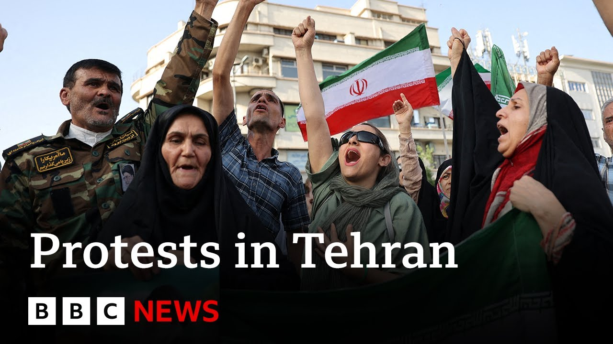

【BBC新闻：德黑兰在美国空袭伊朗核设施后爆发抗议】
Summary: Protests erupted in Tehran amid tensions following US strikes on Iranian nuclear sites, with public opinion divided and the regime facing challenges to its credibility and power.
摘要： 在美国空袭伊朗核设施后，德黑兰爆发抗议活动，公众意见分歧，政权面临信誉和权力挑战。

⏱️ Estimated Reading Time: 8 min
📚 六级生词 📚 雅思生词 📚 托福生词 📚 专八生词 📚 SAT生词 📚 考研生词 📚 GRE生词 📚 高考生词
Protests have taken place in Tehran, despite massive accusations there.
尽管存在大量指控，德黑兰仍爆发了抗议活动。
The BBC isn't allowed to broadcast from inside Iran, but we have this report from Siyad Rush Ar-Galan of the BBC Persian Service in London.
BBC不被允许在伊朗境内播报，但我们得到了BBC波斯语服务驻伦敦记者Siyad Rush Ar-Galan的报道。
In the center of the crowd, Iran's president surrounded by hundreds of party faithful, venting their fury at the United States.
在人群中央，伊朗总统被数百名忠实支持者包围，他们对美国发泄愤怒。
What America did is truly unforgivable, says this woman.
这位女性表示，美国的所作所为确实不可原谅。
Iran is stronger than they perceive.
伊朗比他们想象的要强大。
But after last night's U.S. attacks, the regime here is seriously weakened.
但在昨晚美国的袭击之后，这里的政权严重削弱。
So what comes next?
那么接下来会发生什么？
The Iranian Supreme Leader Ali Hamine could swallow his pride and possibly save his regime and the country from further damage.
伊朗最高领袖阿里·哈梅内伊可能会放下自尊，或许能挽救他的政权和国家免受进一步损害。
Or he could fight on and risk everything.
或者他可能继续战斗，冒着失去一切的风险。
The domestic public opinion is now divided and confused.
国内舆论现在分裂且混乱。
The response must be firm and decisive.
回应必须坚定而果断。
What's at stake here is the very identity of being Iranian.
这里关乎的是作为伊朗人的身份认同。
In my opinion, Iran needs to engage in some reflection and contemplation.
在我看来，伊朗需要进行一些反思和深思。
As for the country's revolutionary guard, it responded by saying U.S. military bases in the region are vulnerable, but they know retaliation would invite further U.S. attacks.
至于该国的革命卫队，他们回应称该地区的美国军事基地很脆弱，但他们知道报复会招致美国进一步的攻击。
This is a state-tv reporter who went to Fordo.
这是一位前往福尔多的国家电视台记者。
I can't see much damage, she says.
她说，我看不到太多损坏。
For now, it's America's word against Iran's.
目前，这是美国与伊朗之间的言辞对抗。
Weakened and humiliated, the Iranian regime will struggle to maintain its credibility and grip on power.
被削弱和羞辱的伊朗政权将努力维持其信誉和对权力的掌控。
In the face of widespread discontent.
面对普遍的不满情绪。
We can speak now to Bahman Kalabasi correspondent for BBC Persian, who's joining us.
我们现在可以与BBC波斯语记者Bahman Kalabasi对话，他加入了我们。
Bahman, very good to see you.
Bahman，很高兴见到你。
We don't have a great picture of the general mood right now inside Iran.
我们目前对伊朗国内的整体情绪没有很清晰的了解。
But what can you tell us?
但你能告诉我们什么？
We mentioned there were some protests in Tehran, but also as we saw in that report, support for the government in the face of what they see as U.S. aggression.
我们提到德黑兰有一些抗议活动，但正如我们在报道中看到的，面对他们认为的美国侵略，也有对政府的支持。
There's definite mass discontent with this regime.
对这个政权确实存在大规模的不满。
And the immediate need that talking to people is very obvious is for this strike and counter-strike cycle to end.
与人们交谈时非常明显的迫切需求是结束这种打击与报复的循环。
The Israelis stop attacking Iran and Iran stop retaliating.
以色列停止攻击伊朗，伊朗停止报复。
That is the first thing that much of the public is hoping would happen as soon as possible.
这是许多公众希望尽快发生的第一件事。
There has been many civilian casualties, infrastructure is being hit, and the lives of millions of people have been disrupted.
已有许多平民伤亡，基础设施遭到打击，数百万人的生活受到干扰。
One thing to hear, bombers and drones on TV, but it's another thing to live under them day and day out and hear those voices and be worried that your area, your neighborhood could be next.
在电视上听到轰炸机和无人机是一回事，但日复一日生活在它们之下，听到那些声音并担心你的地区、你的社区可能是下一个目标，则是另一回事。
So that is the reality in the short term, but in the medium term and long term, I think a lot of Iranians would want this to end permanently, which means they do not want the government to retaliate at all.
所以这是短期的现实，但在中期和长期，我认为许多伊朗人希望这永久结束，这意味着他们根本不希望政府报复。
Of course, there are heartliners who support the regime, and there is some rallying around the flag effect of this as well.
当然，也有支持政权的强硬派，这也有一些围绕国旗团结的效果。
But the majority remains hopeful that the regime calculates that this will be too costly if they attack American interests in the region.
但大多数人仍然希望政权能考虑到，如果他们攻击美国在该地区的利益，代价将过于高昂。
So that is where the population stands on the large scale, and that is hoping that the war would end, and that there is no further escalation by the regime.
所以这是民众的大体立场，他们希望战争结束，政权不再进一步升级局势。
But that still takes us where it was before these attacks started, which was a country heavily sanctioned economy in the worst shape has been since maybe the beginning of this regime.
但这仍然将我们带回到这些袭击开始之前的状态，即一个经济受到严厉制裁的国家，可能处于该政权成立以来最糟糕的状态。
And there's no light at the end of the tunnel without some sort of a negotiated settlement that opens up Iran's economy that lifts the sanctions.
如果没有某种谈判解决方案来开放伊朗经济并解除制裁，隧道尽头就没有光明。
And that feels far away right now.
而现在这感觉还很遥远。
So what options do you think does that leave for the Iranian regime?
那么你认为这给伊朗政权留下了什么选择？
And can we learn anything from how it responded to the assassination of Qasim Selimani during Donald Trump's first?
我们能否从它在唐纳德·特朗普首次任期内对卡西姆·苏莱曼尼遇刺事件的反应中学到什么？
Not many good options.
没有太多好的选择。
If they are one to finally make a U-turn and accept that their policies have brought Iran to this point, even though they find it unfair and even though they actually are worried about the consequences, there is the reality is they don't actually have very good options.
如果他们最终要掉头并承认他们的政策将伊朗带到了这一步，即使他们认为这不公平，即使他们实际上担心后果，现实是他们确实没有很好的选择。
If they decide to come out and say that we want to negotiate, then they have given up all that they have invested in, and billions of dollars, and with nothing to show for it.
如果他们决定站出来说我们想谈判，那么他们就放弃了他们所有的投资，数十亿美元，却一无所获。
And if they want to retaliate, we know the cost might be even higher.
如果他们想报复，我们知道代价可能更高。
So it's a very difficult place that the regime is in right now.
所以政权现在处于一个非常困难的境地。
Of course, they blame the United States and Israel, and some of it does find audience in Iran because it was the United States that ripped up the Iran nuclear deal.
当然，他们指责美国和以色列，其中一些在伊朗确实有听众，因为是美国撕毁了伊朗核协议。
It was the United States that brought back sanctions, despite Iran being following and adhering to that deal.
是美国重新实施了制裁，尽管伊朗遵守并坚持了该协议。
But nevertheless, today is a different day, and they have to make a decision in which way they want to go.
但无论如何，今天是不同的一天，他们必须决定要走哪条路。
Okay.
好的。